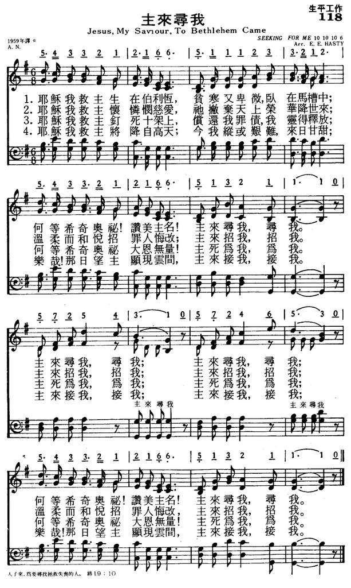

|
|
|
|
1 Jesus my Saviour to Bethlehem came, 2 Jesus my Saviour, on Calvary’s tree, 3 Jesus my Saviour, the same as of old, 4 Jesus my Saviour shall come from on high—
|
118主来寻我
1.耶稣我救主生在伯利��,
贫寒又卑微,卧在马槽中; 何等希奇奥秘!赞美主名! 主来寻我,寻我. 主来寻我,寻我;主来寻我,寻我; 何等希奇奥秘!赞美主名! 主来寻我,寻我. 2.耶稣我救主怀怜悯慈爱, 祂撇弃天上荣华降世来; 温柔而和悦招罪人悔改! 主来招我,招我. 主来招我,招我;主来招我,招我; 温柔而和悦招罪人悔改! 主来招我,招我. 3.耶稣我救主钉死十架上, 偿还我罪债,我灵得释放, 何等希奇奥秘!大恩无量! 主死为我，为我. 主死为我，为我;主死为我，为我; 何等希奇奥秘!大恩无量! 主死为我，为我. 4.耶稣我救主将降自高天， 今我纵或艰难，来日甘甜； 乐哉！那日望主显现云间， 主来接我，接我. 主来接我，接我;主来接我，接我; 乐哉！那日望主显现云间， 主来接我，接我. |
|
https://www.mred365.cn/szxg/7121.html
 https://hymnary.org/hymn/CHCH1959/page/28 Jesus, my Saviour, to Bethlehem came]
|
|
|
|
|


祂來尋我 Jesus My Savior To Bethlehem Came https://www.youtube.com/watch?v=O2YeHvptlQU -
Jesus, my Saviour, to Bethlehem came https://www.youtube.com/watch?v=BUT-G4xHYpo
LX1818
Jesus, My Saviour, To
Bethlehem Came
118主来寻我
| Text: | Seeking for me |
| Tune: | [Jesus, my Saviour, to Bethlehem came] |
| Composer: | E. E. Hasty, 19th Century |
Tune Information
| Title: | [Jesus my Savior to Bethlehem came] (Hasty) |
| Composer: | E. E. Hasty |
| Meter: | 10.10.10.6.6.6.10.6 |
| Incipit: | 54332 12166 51112 |
| Key: | G Major |
| Copyright: | Public Domain |
| Short Name: | E. E. Hasty |
| Full Name: | Hasty, E. E., 1840-1914 |
| Birth Year: | 1840 |
| Death Year: | 1914 |
Emerson Eaton Hasty USA 1840-1914. Born in ME, his family moved to OH when he was three. He was a beekeeper most of his life. He married Annette (Nettie) Wilson, and they had five children: William, Nettie, Arthur, Elliott, and Julia. He translated Georgia’s 4th Georgic. He also wrote gospel songs. Other written works include: “What is Christianity?” and “Reasons for not joining church societies”. He also submitted articles to a newsletter on beekeeping. He died in Ottawa Hills, OH.
John Perry
Seeking for Me wordwisehymns
Words: author unknown; published in Gospel Gems in 1878, under the initials
A.N.
Music: Emerson E. Hasty (b. _____, 1840; d. _____, 1914)
Links:
Wordwise Hymns (none)
The Cyber Hymnal
Hymnary.org
Note: Nothing is known of the author of the words except the initials. One book
seems to attribute the text as well tune to Mr. Hasty, but that is unlikely.
Another has Charlotte Elliott as the author of the words, but that is even less
likely. We just don’t know.
This is a simple, but very nice song. It should be used more than it is. The
third and fourth line of each stanza are repeated as a kind of refrain.
CH-1) Jesus, my Saviour, to Bethlehem came,
Laid in a manger to sorrow and shame;
Oh, it was wonderful, blest be His name,
Seeking for me, for me:
Seeking for me, seeking for me,
Seeking for me, seeking for me,
Oh, it was wonderful, blest be His name,
Seeking for me, for me.
Years ago I worked with a man who was formerly an assistant in the laboratory of
Frederick Banting and Charles Best, the discoverers of insulin. Their work has
changed the lives of millions who have suffered from diabetes.
There are many people and events that have been significant difference makers in
history. Some in beneficent ways, others bringing untold grief and painful loss.
Hitler, by his invasion of Poland in 1939, plunged the world into a devastating
war, and the terrorists’ wanton destruction of the World Trade Centre in 2001
brought a chain reaction that continues to affect us.
One person above all others can be described as the ultimate Difference Maker.
That is the Lord Jesus Christ. Twenty years ago, James Kennedy and Jerry
Newcombe published What If Jesus Had Never Been Born? (A great book, and still
in print. Recommended reading.) It’s astonishing to learn of the effects of this
one Person on our society. Government, science, health, economics, the arts, and
more, have been radically affected by Him and His teachings.
Painting with broad strokes, we see Him as the Creator God. “All things were
made through Him, and without Him nothing was made that was made” (Jn. 1:3).
“All things were created through Him and for Him. And He is before all things,
and in Him all things consist [they’re held together]” (Col. 1:16-17). And we
can add to this the sweeping influence He has had on world history, some of it
documented by Kennedy and Newcombe.
But etch the scene in finer detail, and what do we see? The Lord Jesus has
revealed His transforming power in the lives of individuals, one by one. While I
gaze in wonder at the impact Christ has had on society at large, and I’m
certainly affected by it all, the greatest wonder of them all is that God
reached down and saved me, through the blood of His Son.
Yes, it’s true that “God so loved the world” that He sent His Son to take sin’s
punishment in my place (Jn. 3:16). But it’s difficult to get my mind around
that–the whole world. The most thrilling thing of all is that “the Son of
God…loved me and gave Himself for me” (Gal. 2:20). The gospel is a personal
matter. Christ, the sacrificial “Lamb of God” (Jn. 1:29) is my own Saviour.
Nearly a century and a half ago, a lovely gospel song was written about that.
Whether the writer, “A.N.” was a man or woman may never be known. But I see that
unknown believer bathed in light of the above. The love of God reaches down to
individuals, men or women, famous or unknown, rich or poor, educated or
illiterate, saves them by His grace, and gives them a place in His forever
family.
History is dotted with the names of well known Christians: Martin Luther,
Charles Spurgeon, C. S. Lewis, Billy Graham, and more. But aren’t you glad God
loved A. N., and that He loves you just as much? And can you speak with
confidence, as the hymn writer does of “My Saviour”? Can you confess that, yes,
He came to save me, He paid my debt of sin, and one day He’s coming to take me
to Himself forever? If not, I pray that you may come to “know the love of Christ
which passes knowledge” (Eph. 3:19).
CH-2) Jesus, my Saviour, on Calvary’s tree,
Paid the great debt and my soul He set free;
Oh, it was wonderful–how could it be?
Dying for me, for me!
CH-5) Jesus, my Saviour, will come from on high,
Sweet is the promise as weary years fly;
Oh, I shall see Him descending the sky,
Coming for me, for me.
Questions:
1) Have you trusted in the Lord Jesus as your personal Saviour?
2) What differe
https://wordwisehymns.com/2015/09/16/seeking-for-me/